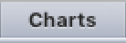
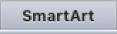
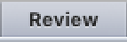
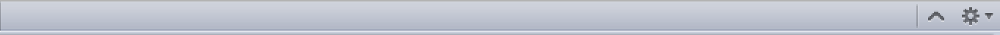
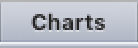
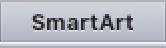
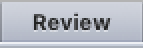
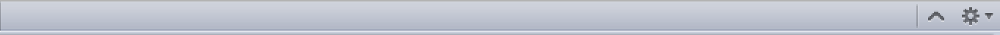

Procrastination is the avoidance of doing a task that needs to be accomplished. Sometimes, procrastination takes place until the "last minute" before a deadline. Procrastination can take hold on any aspect of life—putting off cleaning the stove, repairing a leaky roof, seeing a doctor or dentist, submitting a job report or academic assignment or broaching a stressful issue with a partner. Procrastination can lead to feelings of guilt, inadequacy, depression and self-doubt.
In a study of academic procrastination from the University of Vermont, published in 1984, 46% of the subjects reported that they "always" or "nearly always" procrastinate writing papers, while approximately 30% reported procrastinating studying for exams and reading weekly assignments. Nearly a quarter of the subjects reported that procrastination was a problem for them, regarding the same tasks. However, as many as 65% indicated that they would like to reduce their procrastination when writing papers and approximately 62% indicated the same for studying for exams and 55% for reading weekly assignments.
A 1992 study showed that "52 [percent] of surveyed students indicated having a moderate to high need for help concerning procrastination." It is estimated that 80–95% of college students engage in procrastination, and approximately 75% consider themselves procrastinators.
In a study performed on university students, procrastination was shown to be greater on tasks that were perceived as unpleasant or as impositions than on tasks for which the student believed he or she lacked the required skills for accomplishing the task.
The pleasure principle may be responsible for procrastination; one may prefer to avoid negative emotions, and to delay stressful tasks. The belief that one works best under pressure provides an additional incentive to the postponement of tasks. Some psychologists cite such behavior as a mechanism for coping with the anxiety associated with starting or completing any task or decision. Piers Steel indicated in 2010 that anxiety is just as likely to get people to start working early as late, and that the focus of studies on procrastination should be impulsiveness. That is, anxiety will cause people to delay only if they are impulsive.
Have you ever sat down to complete an important task — and then suddenly discovered you were up loading the dishwasher or engrossed in the Wikipedia entry about Chernobyl? Or perhaps you suddenly realize that the dog needs to be fed, emails need to be answered, your ceiling fan needs dusting — or maybe you should go ahead and have lunch, even though it’s only 11 a.m.?
Next thing you know, it’s the end of the day and your important task remains unfinished.
For many people, procrastination is a strong and mysterious force that keeps them from completing the most urgent and important tasks in their lives with the same strength as when you try to bring like poles of a magnet together. It's also a potentially dangerous force, causing victims to fail out of school, perform poorly at work, put off medical treatment or delay saving for retirement. A Case Western Reserve University study from 1997 found that college-age procrastinators ended up with higher stress, more illness and lower grades by the end of the semester.
But the reasons people procrastinate are not understood that well. Some researchers have viewed procrastination largely as a failure of self-regulation — like other bad behaviors that have to do with a lack of self-control, such as overeating, a gambling problem or overspending. Others say it's not a matter of being lazy or poor time management, as many smart overachievers who procrastinate often can attest. They say it may actually be linked to how our brain works and to deeper perceptions of time and the self.


 






